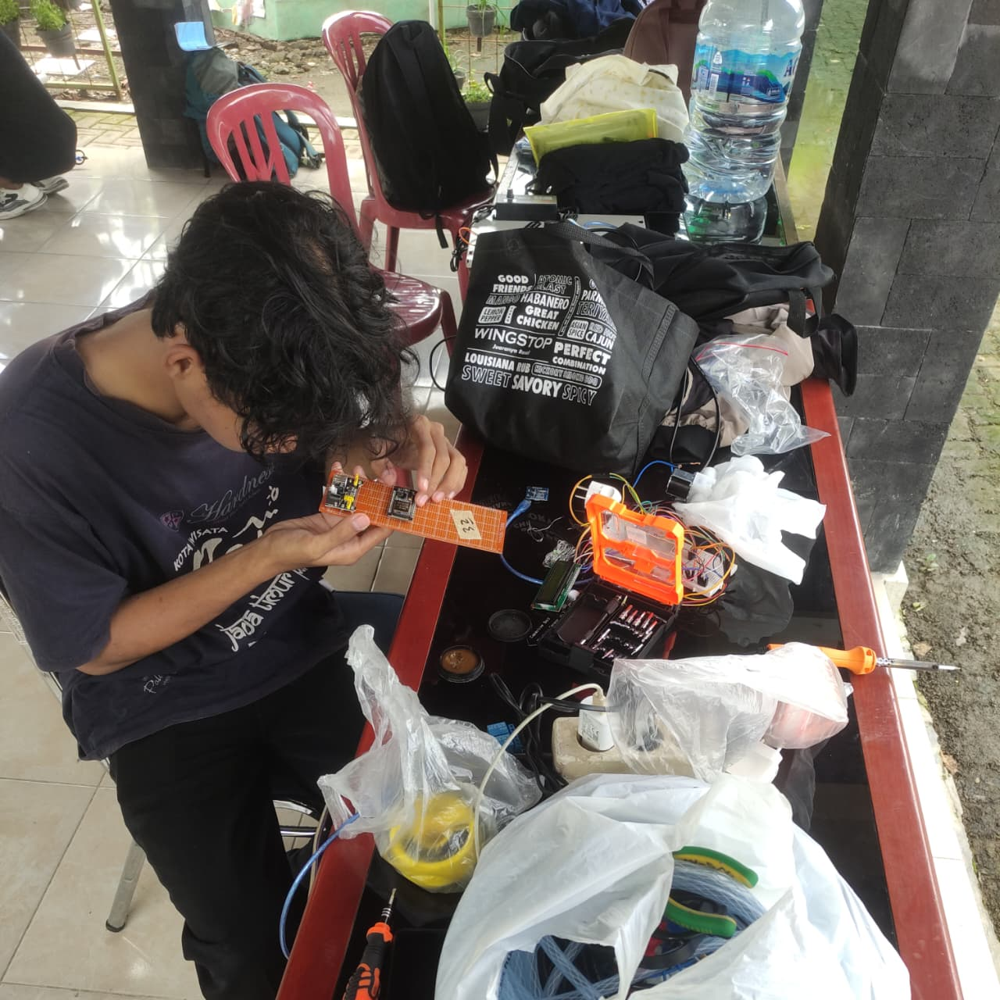
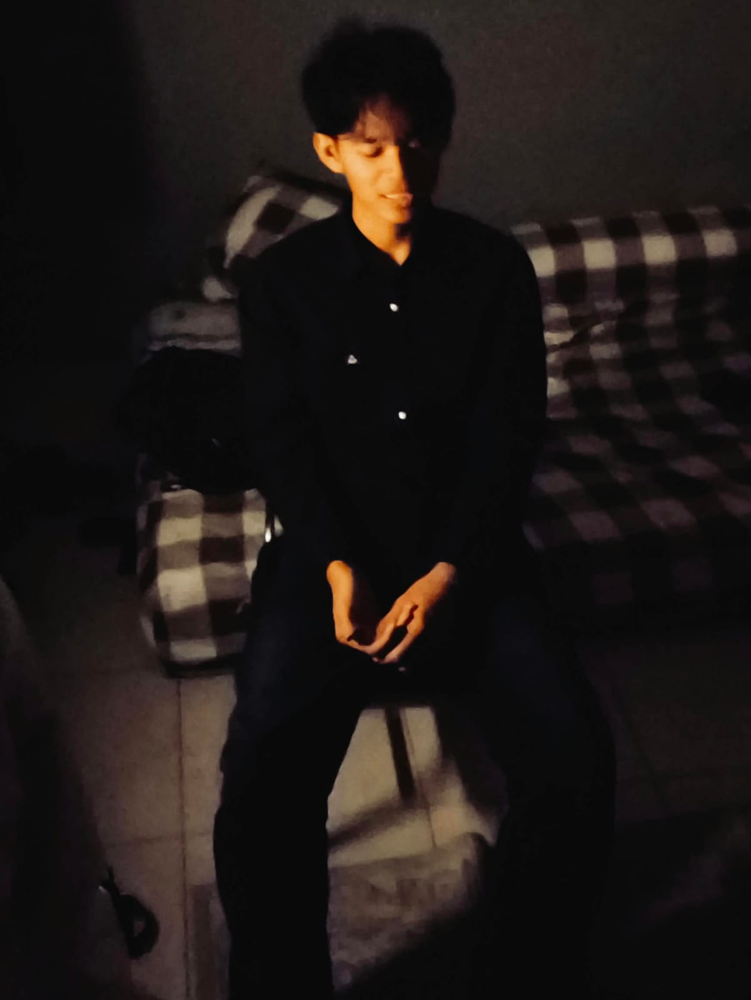
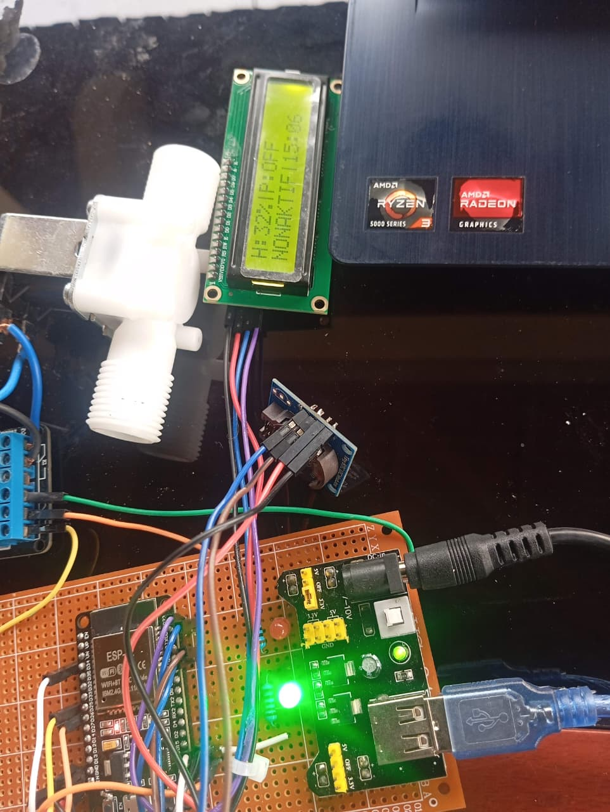
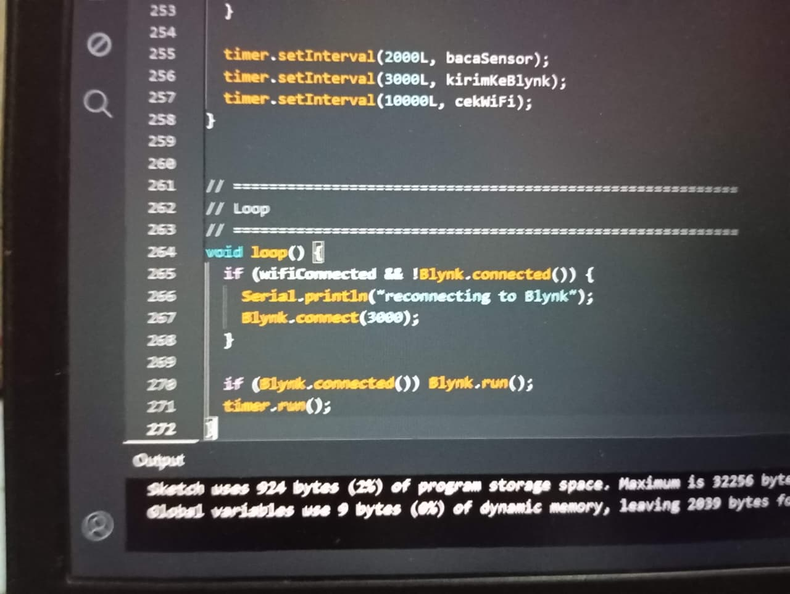

PROFILE
My Profile
Perjalanan dan pengembangan diri.

Perkenalkan, namaku Revan Aditya Kurniawan, Mahasiswa baru dari Universitas Negeri Semarang yang memiliki ketertarikan pada bidang teknologi, khususnya pada coding seperti, sistem, database, serta IoT (Arduino dan ESP32).
MY JOURNEY
Kumpulan dokumentasi kegiatan, proyek, dan perjalanan belajar saya.

Perjalanan dan pengembangan diri.

Eksplorasi mikrokontroler dan sensor.
Video demonstrasi proyek.

Gambaran coding
Cuplikan proses pengerjaan.